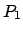 |
2つの後輪の中点 |
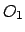 |
前輪の回転軸と後輪の回転軸の交点 (トラクターの回転中心) |
| 操舵軸
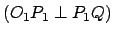 |
|
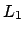 |
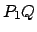 間の距離 (0.4 [m]) |
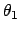 |
トレーラに対するトラクターの姿勢角 |
| 操舵角 | |
| トラクターの軌跡 |
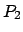 |
2つの後輪の中点 |
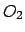 |
と後輪の回転軸の交点 (トレーラーの回転中心) |
| 操舵軸 | |
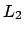 |
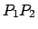 間の距離 (1.2 [m]) |
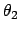 |
トレーラーの姿勢角 |
| トレーラーの軌跡 |
Fig.A.16を基に， トレーラーの運動方程式は次のように表すことができる．
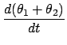 |
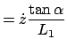 |
(A.5) |
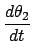 |
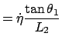 |
(A.6) |
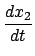 |
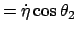 |
(A.7) |
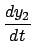 |
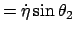 |
(A.8) |
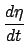 |
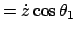 |
(A.9) |
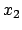
とする と，次のようになる．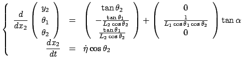 |
(A.10) |
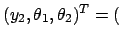
目標軌 道との偏差，トラクター姿勢角，トレーラー姿勢角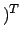
と捉えて，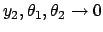
に追従させることを実現すればよい．このシステムのシミュレーション方法を以下に述べる．但し，シミュレーションで はトラクターとトレーラー軸の長さはそれぞれ
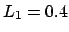
[m] と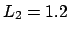
[m] としている．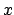
に関する方程式を原点近傍で線形化を行うと，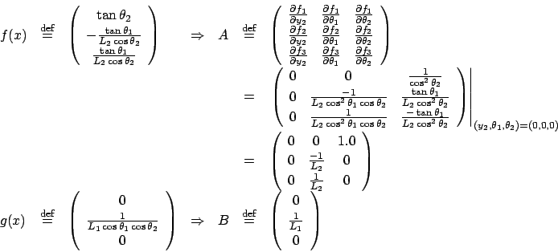 |
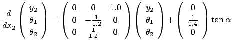 |
(A.11) |
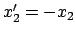
を用いて，線形方程式は次のようになる．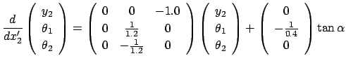 |
(A.12) |
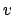
として，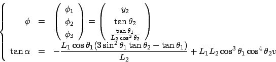 |
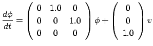 |
(A.13) |
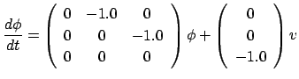 |
(A.14) |